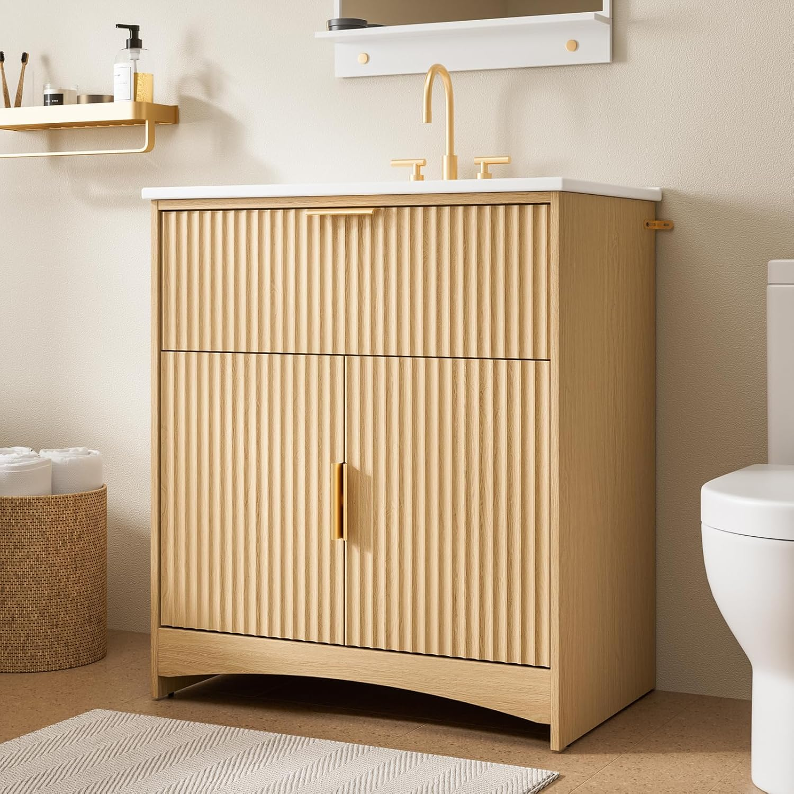
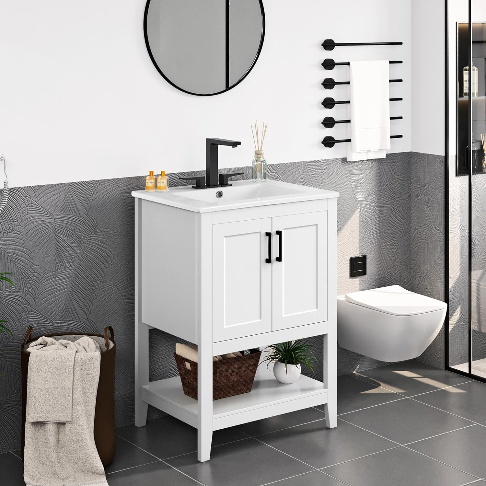
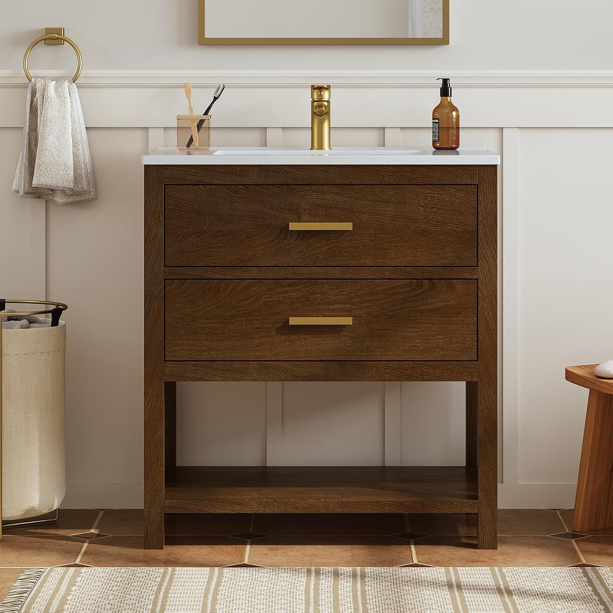
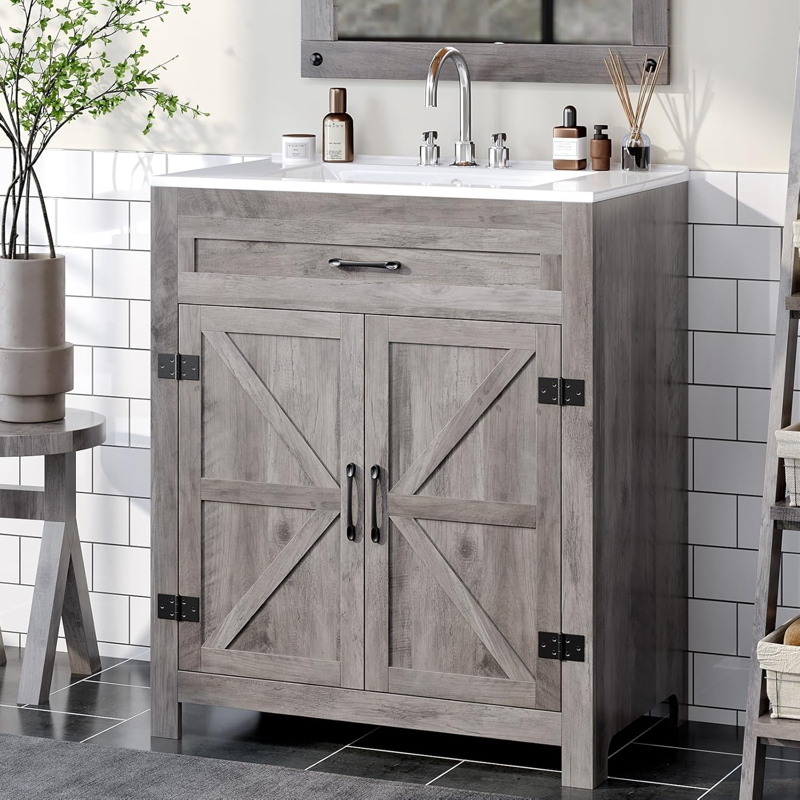
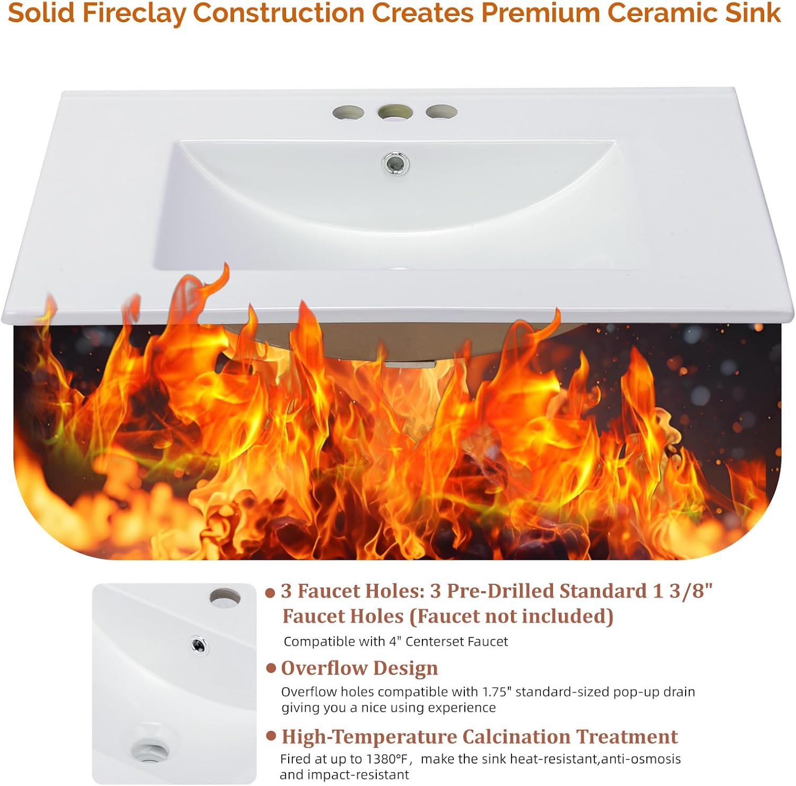
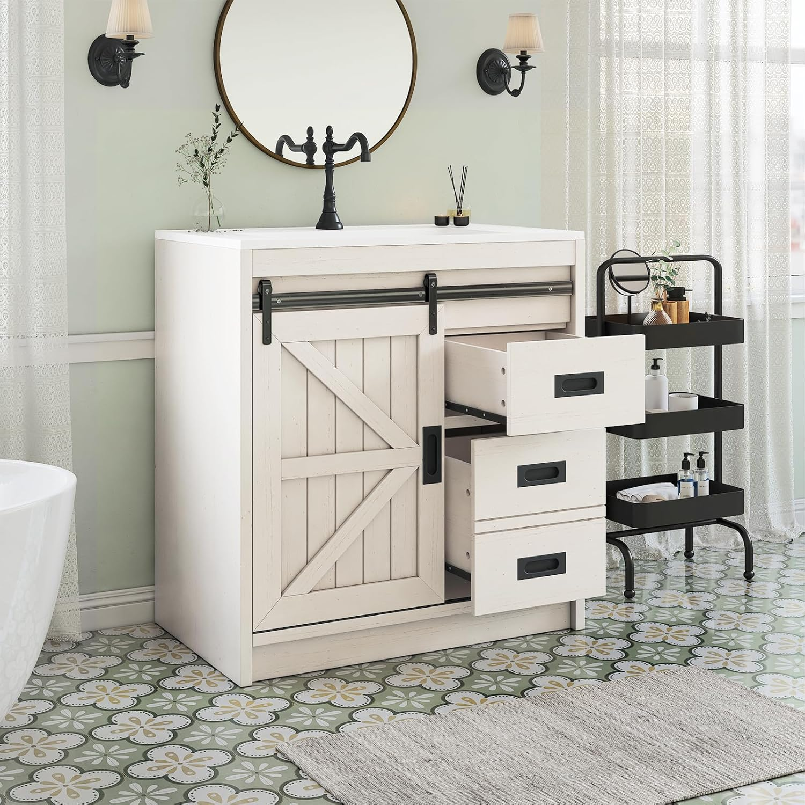

7 Best 30-Inch Bathroom Vanities: Top Picks for Every Style (2026)

Home & Bathroom Expert | Reviewing vanities and bathroom furniture since 2024
This article contains affiliate links. If you purchase through these links, we may earn a small commission at no extra cost to you. Full disclosure.
Quick Answer: Best 30-Inch Vanity?
The Amada 30" Fluted Freestanding Vanity
  ($248.99) is our top pick for its on-trend fluted design, ceramic sink, and tapered mid-century legs at an unbeatable price. For budget shoppers, the 30" Floating Vanity with LED Light
($248.99) is our top pick for its on-trend fluted design, ceramic sink, and tapered mid-century legs at an unbeatable price. For budget shoppers, the 30" Floating Vanity with LED Light

The 30-inch bathroom vanity is the sweet spot between compact and spacious. It fits standard-width bathrooms without feeling cramped, offers real counter space on both sides of the sink, and costs significantly less than larger models -- making it the most popular single-sink size in the US.
We analyzed reviews and specifications across 20+ 30-inch bathroom vanities to find the 7 that deliver the best combination of design, build quality, storage, and value. From sleek modern fluted designs to rustic farmhouse barn door styles, this guide covers every aesthetic at every price point.
Whether you are upgrading from an older vanity or building from scratch, the 30-inch size gives you flexibility. Already know you need something smaller? See our small bathroom vanity guide. Need a step up? Check our 36-inch vanity roundup. Not sure what size fits your space? Start with our complete buying guide.
Our picks range from $189.95 to $299.99, with every vanity including a sink and most featuring soft-close hardware. All models fit standard bathroom plumbing configurations.

Amada 30" Fluted Freestanding Vanity
On-trend fluted cabinet front with ceramic sink included. Mid-century tapered legs and natural oak finish make this the most stylish 30-inch vanity under $250.
Check Price on AmazonWhy Choose a 30-Inch Vanity?
The 30-inch vanity occupies a strategic middle ground in bathroom design. Here is why this size dominates the single-sink market:
- Fits most bathrooms: Standard US full bathrooms (5x8 feet) accommodate a 30-inch vanity with room to spare for a toilet and shower
- Real counter space: Unlike 24-inch models that barely leave room around the sink, 30 inches gives you 5-7 inches of usable surface on each side
- Adequate storage: Most 30-inch vanities include 1-2 doors and/or drawers -- enough for towels, toiletries, and cleaning supplies
- Price sweet spot: Typically 15-25% less expensive than 36-inch models while offering noticeably more function than 24-inch options
- Standard plumbing compatibility: Water lines and drain positioning align perfectly with most existing bathroom plumbing
- Easy replacement: If you are swapping an old vanity, 30 inches is the most common size you will find, making upgrades straightforward
How We Evaluated
- Build Quality (25%): Materials (solid wood vs MDF vs particle board), moisture resistance, hardware quality
- Storage & Function (25%): Number of doors/drawers, shelf adjustability, towel holder inclusion
- Design & Aesthetics (20%): Visual appeal, trend alignment (farmhouse, modern, floating), finish quality
- Countertop & Sink (15%): Material type, integrated vs drop-in, basin depth, ease of cleaning
- Value (15%): Price relative to quality, what is included (sink, faucet holes, hardware)
Top 7 30-Inch Bathroom Vanities
1. Amada 30" Fluted Freestanding Vanity
Best For: On-trend modern design at a mid-range price
Pros
- Fluted front cabinet (2026 top trend)
- Ceramic basin included
- Mid-century tapered legs
- Soft-close door
Cons
- MDF construction (not solid wood)
- Single door (limited storage)
The Amada combines the hottest design trend of 2026 -- fluted vertical grooves on the cabinet front -- with mid-century modern tapered legs and a warm natural oak finish. At under $250 with a ceramic sink included, it delivers a designer look that rivals vanities costing twice as much. The 30-inch width fits standard bathrooms perfectly, and the integrated ceramic basin simplifies cleaning with no seams to trap grime. If you want the most stylish 30-inch vanity at a fair price, this is it.
Check Price on Amazon
2. LIKIMIO 30" Modern Vanity with Towel Holder
Best For: Clean modern aesthetic with built-in towel storage
Pros
- Integrated towel holder (rare feature)
- Adjustable solid wood legs
- Clean white modern design
- Sink included
Cons
- Very new product (limited reviews)
- White finish shows water marks
The LIKIMIO stands out with a feature most vanities lack: a built-in towel holder integrated into the frame. This eliminates the need for a separate towel bar or ring, saving wall space and keeping towels within arm's reach. The adjustable solid wood legs let you fine-tune the height to match your plumbing and comfort preference. Its crisp white finish pairs beautifully with any bathroom color scheme. For fans of floating vanity aesthetics who prefer freestanding installation, this delivers a similar look without wall mounting.
Check Price on Amazon

3. 30" Floating Vanity with LED Light
Best For: Budget floating design with LED lighting
Pros
- Lowest price on this list
- Built-in LED lighting
- Wall-mounted floating design
- Modern black finish
Cons
- Requires wall mounting (harder install)
- LED may need electrical knowledge
Under $200 for a wall-mounted floating vanity with built-in LED lighting is exceptional value. The matte black finish gives it a premium, spa-like look, and the floating installation opens up floor space and makes bathroom cleaning effortless. The LED light strip adds ambient glow that doubles as a night light. If you want the modern floating look without spending $400+, this is the clear winner. Just note that installation requires finding wall studs and securing the unit to support its weight -- see our installation guide for tips.
Check Price on Amazon
4. Aitjunz 30" Farmhouse Barn Door Vanity
Best For: Rustic farmhouse style with maximum storage
Pros
- Sliding barn door (signature farmhouse look)
- 3 drawers + adjustable shelves
- Highest rated farmhouse option (4.7)
- Ceramic sink included
Cons
- Barn door blocks one side at a time
- Rustic style not for everyone
The Aitjunz earns our top farmhouse pick thanks to its excellent 4.7-star rating across 103 reviews -- the best satisfaction score among 30-inch farmhouse vanities. The sliding barn door adds authentic rustic charm, while 3 drawers and adjustable interior shelves provide more organized storage than most competitors. The white finish keeps it bright and clean-looking even in smaller bathrooms. If you love the farmhouse aesthetic, this is the best 30-inch option available. Pair it with oil-rubbed bronze fixtures for the most cohesive rustic look.
Check Price on Amazon
5. DELUXE LIVING 30" Farmhouse Vanity with Open Shelf
Best For: Maximum storage with drawers + open shelf
Pros
- Drawers AND open storage shelf
- Farmhouse design with clean lines
- Solid build quality
- Sink included
Cons
- Open shelf collects dust
- Higher price point for farmhouse
The DELUXE LIVING takes a unique approach by combining closed drawer storage with an open bottom shelf. This dual-storage design lets you keep toiletries hidden in the drawers while displaying rolled towels or decorative baskets on the open shelf -- a design trick that adds visual depth to any bathroom. The farmhouse styling is more refined than rustic barn door models, making it versatile enough for both country and transitional decor. At $269.99, it costs a bit more than competitors, but the extra storage flexibility justifies the premium.
Check Price on Amazon

6. VINGLI 30" Farmhouse Barn Door Vanity (Washed Gray)
Best For: Farmhouse barn door style at the lowest price
Pros
- Most reviews (128) -- proven reliability
- Unique washed gray finish
- Barn door + open shelf
- Lowest farmhouse price
Cons
- Lower rating than Aitjunz (4.2 vs 4.7)
- Some assembly complaints
With 128 reviews, the VINGLI is the most battle-tested barn door vanity in the 30-inch category. Its washed gray finish is distinctive -- warmer than white but lighter than dark wood, giving it a relaxed coastal-farmhouse vibe that works in both traditional and modern bathrooms. The sliding barn door and open bottom shelf mirror higher-priced competitors at $10-30 less. Some buyers report tricky assembly, but once built, the quality holds up well. If you want farmhouse style on a budget with the confidence of extensive buyer feedback, the VINGLI delivers.
Check Price on Amazon



7. LUXOAK 31" Farmhouse Sliding Barn Door Vanity
Best For: Proven quality with the most buyer validation
Pros
- 252 reviews (most on this list)
- Distressed white farmhouse finish
- Sliding barn door mechanism
- Generous 31" width
Cons
- Premium price at $300
- 31" may not fit tight 30" openings
The LUXOAK wins on sheer buyer confidence -- 252 reviews with a 4.3 average means hundreds of homeowners have validated this vanity's quality. The distressed white finish gives it a well-worn cottage charm that many farmhouse enthusiasts prefer over brand-new-looking finishes. At 31 inches, it is technically 1 inch wider than standard 30-inch models, which adds a touch of extra counter space. The sliding barn door operates smoothly on metal rails and conceals generous interior shelving. If you value proven track records over cutting-edge design, the LUXOAK is the safest choice on this list.
Check Price on Amazon



Comparison Table
| Product | Size | Style | Rating | Price |
|---|---|---|---|---|
| Amada Fluted | 30" | Modern Fluted | 4.5/5 | $249 |
| LIKIMIO | 30" | Modern + Towel Holder | 5.0/5 | $250 |
| LED Floating | 30" | Floating + LED | 4.5/5 | $190 |
| Aitjunz | 30" | Farmhouse Barn Door | 4.7/5 | $250 |
| DELUXE LIVING | 30" | Farmhouse + Open Shelf | 4.4/5 | $270 |
| VINGLI | 30" | Farmhouse Washed Gray | 4.2/5 | $240 |
| LUXOAK | 31" | Farmhouse Distressed | 4.3/5 | $300 |
Buying Guide: Choosing a 30-Inch Vanity
Style Selection
The 30-inch category spans three major design styles. Choosing the right one depends on your bathroom's overall aesthetic:
- Modern/Contemporary: Clean lines, fluted fronts, tapered legs, minimalist hardware. Works in updated bathrooms with neutral color palettes. Our picks: Amada (#1), LIKIMIO (#2), LED Floating (#3)
- Farmhouse/Rustic: Barn doors, distressed finishes, open shelving, oil-rubbed bronze hardware. Ideal for country homes and cottage-style bathrooms. Our picks: Aitjunz (#4), DELUXE LIVING (#5), VINGLI (#6), LUXOAK (#7)
- Transitional: Blends modern and traditional elements. Shaker-style doors with modern hardware. If this is your style, the DELUXE LIVING (#5) bridges both worlds effectively
Material Guide
- Powder room (low humidity) → MDF or particle board is fine
- Full bathroom with shower → MDF minimum, plywood preferred
- Master bathroom (daily use) → Solid wood or plywood for longevity
- Rental property → Budget MDF works for 3-5 year lifespan
What Should Be Included
At the $190-$300 price range, expect your 30-inch vanity to include:
- Sink basin: All 7 picks on this list include a sink (ceramic or integrated)
- Drain assembly: Most include a pop-up drain; verify before buying
- Mounting hardware: Wall-mount models should include all brackets
- NOT typically included: Faucet, P-trap, supply lines, mirror
Size Comparison: How 30" Fits In
- 24" vanities: Best for powder rooms and half baths -- see our small vanity guide
- 30" vanities: The standard for full bathrooms (you are here)
- 36" vanities: More counter space, ideal for larger bathrooms -- see our 36-inch picks
- 48"+ vanities: Master bath territory, often double-sink
Installation Tips for 30-Inch Vanities
Before You Start
- Measure twice: Confirm wall space is at least 34 inches wide (30" vanity + 2" clearance per side)
- Check plumbing position: Water supply lines and drain should align with the new vanity's sink location
- Turn off water: Shut off supply valves under the existing vanity before removal
- Level the floor: Use shims if your bathroom floor is uneven -- a level vanity prevents countertop water pooling
Freestanding vs Floating Installation
Freestanding vanities (picks #1, #2, #4, #5, #6, #7) simply sit on the floor and attach to the wall with 2-3 screws for stability. Most homeowners can install one in 1-2 hours with a drill, level, and adjustable wrench.
Floating/wall-mounted vanities (pick #3) require more skill. You must locate and screw into wall studs that can support 80-120+ pounds. If your studs do not align, toggle bolts or a mounting board are necessary. Consider hiring a professional if you are not comfortable with wall mounting. For detailed steps, see our complete installation guide.
Frequently Asked Questions
Q: Is a 30-inch vanity big enough for a full bathroom?
Yes. A 30-inch vanity is considered a standard size that works well in most full bathrooms. It provides enough counter space for daily essentials while fitting comfortably in rooms as small as 5x8 feet. For larger master bathrooms, consider upgrading to a 36-inch model.
Q: What is the actual countertop space on a 30-inch vanity?
After accounting for the sink basin (typically 16-20 inches wide), you get roughly 5-7 inches of usable counter space on each side. This is enough for a soap dispenser, toothbrush holder, and small accessories. If you need more counter space, a 36-inch vanity adds significant usable surface area.
Q: Can I install a 30-inch vanity myself?
Most freestanding 30-inch vanities are beginner-friendly DIY projects requiring basic tools (level, drill, wrench). Wall-mounted floating models need more expertise -- you must locate wall studs and support 80-120 lbs. Allow 1-2 hours for freestanding or hire a professional for floating models. See our installation guide for step-by-step instructions.
Q: What plumbing do I need for a 30-inch vanity?
Standard US plumbing works with all 30-inch vanities. You need hot and cold water supply lines (typically 3/8-inch compression fittings) and a 1-1/4 inch drain connection. Most vanities include a P-trap compatible drain. Check that your existing plumbing aligns with the new vanity's sink position before purchasing.
Q: Should I choose a 30-inch or 36-inch vanity?
Choose 30-inch if your bathroom is under 50 square feet or wall space is limited. Choose 36-inch if you have the room and want more counter space. The 6-inch difference adds significant storage and countertop area. See our 36-inch vanity guide for detailed comparisons.
Final Verdict
- Best Overall: Amada 30" Fluted -- on-trend fluted design with ceramic sink at $249
- Best Budget: 30" LED Floating Vanity -- floating style with LED lighting for just $190
- Best Farmhouse: Aitjunz 30" Barn Door -- 4.7 stars with 103 reviews and 3 drawers
The 30-inch bathroom vanity is the Goldilocks size: not too small, not too large, and priced right for any budget. Whether you lean toward sleek modern fluted designs or rustic farmhouse barn door charm, today's options deliver genuine quality at accessible prices. For the best combination of contemporary style and practical value, the Amada 30" fluted vanity is our clear winner -- but if farmhouse is your aesthetic, the Aitjunz's 4.7-star rating and 3-drawer storage make it equally compelling.
Complete Your Bathroom Upgrade
Our network of expert review sites covers every bathroom essential: